Constructing lofted synchronous features
You can use the Lofted Protrusion, Lofted Surface, Lofted Cutout, and BlueSurf commands to create lofted features.
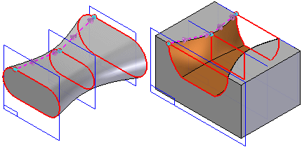
Lofted features are constructed by extruding two or more cross sections to construct a feature.
Similar to the swept commands, you can define the cross sections by:
-
Selecting sketch elements
-
Selecting edges
You can also use a curve, known as a guide curve, to define a path between the cross sections of the loft. The end condition options allow you to control the shape of the loft feature where it meets the first and last cross sections.
Because loft features are often used to define aesthetic elements in a model, you may want to experiment with different settings to achieve the results you want.
You can construct a loft feature with the BlueSurf command that contains only one cross section and one guide curve.
Cross sections
The cross sections must be closed when constructing a lofted protrusion or lofted cutout, but they can be open when constructing a lofted surface or a BlueSurf feature. You can use planar or non-planar cross sections when constructing lofted features. A non-planar cross section can be constructed using the Intersection Curve command or you can use a part edge that is non-planar.
As you define each cross section, you must select the start point for non-periodic cross sections. You define the start points (A), (B), (C) by positioning the cursor over a vertex when you select each cross section. Defining appropriate start points allows you to prevent or control twisting. In some cases, mismatched start points can result in failed features.
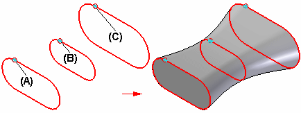
-
Cross sections without vertices
When defining a loft feature using a periodic cross section, such as a circle, ellipse, or some types of b-spline curves, you do not need to define a start point for that cross section. When you select a cross section without vertices (B), Solid Edge evaluates the cross section with respect to the start points on adjacent cross sections with vertices (A) (C).
An appropriate start point is assigned to construct a loft that blends as smoothly possible. This typically works very well when the elements in the adjacent cross sections are tangent at their endpoints.
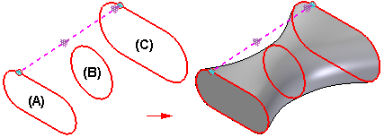
-
Closing Lofts
When constructing a lofted feature with three or more cross sections, you can specify whether the feature closes on itself using the Closed Extent option, available during the Extent Step.
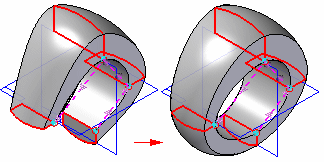
-
Using points as cross sections
You can use points (A) as cross sections by setting the Select option on the command bar to Point.
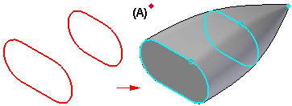
Vertex mapping
Vertex mapping allows you to define sets of map points between the cross sections of a loft or swept feature. A default vertex map set is defined by the start point for each cross section you select. The Vertex Mapping button, available on the command bar during the Extent Step, allows you to redefine the start point for a cross section or to define additional vertex mapping sets.
Defining additional sets of vertex map points can be helpful for lofts and sweeps where there are different numbers of elements in each cross section. This can sometimes result in undesirable twisting of the feature or feature failure.
For example, a simple loft between a triangular sketch and a rectangular sketch will result in twisting (A). Defining additional vertex map sets allows you to eliminate the twisting (B). Notice that it is valid to use the same sketch vertex in more than one map set, as in sets 1 and 2.
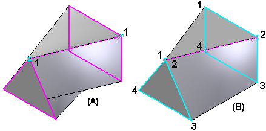
-
Vertex mapping guidelines
There are several guidelines that apply to vertex mapping.
-
A vertex or point can exist in more than one set. Sets 1 and 2 share a common vertex.
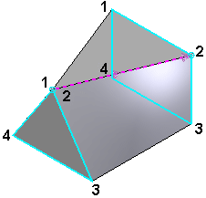
-
Map sets should not cross. This results in an invalid surface or feature failure.
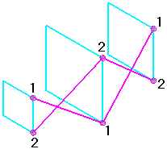
-
Each cross section with vertices must have a point defined in the vertex map set. Cross sections without vertices do not require a point in the vertex map sets. The vertex map set shown is valid, but can result in a twisted loft, if the adjacent cross sections are not tangent at their endpoints.
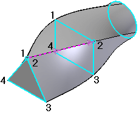
-
You can add point or line elements to a cross section to allow definition of a vertex mapping point where no vertex on the cross section exists. These elements are not part of the cross section, but allow you to use vertex mapping to refine the loft and control twisting. For example, four line elements were added to the circle to allow definition of vertex map points on the circle. This eliminated twisting for this loft.
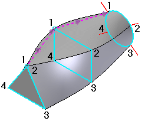
-
When you specify a closed loft, the map sets automatically close. The last vertex given will map to the first vertex specified in the set. You will not have to reselect the first point to close the set.
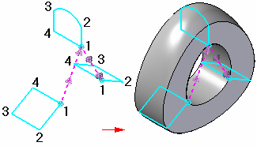
-
When you use a point as a cross section, it must be included in every map set.
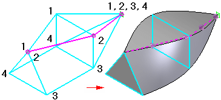
-
Guide curves
Guide curves (A) (B) allow you to control the shape of a lofted or swept surface between the cross sections. You can use a sketch, the edge of an adjacent surface, or a curve that has been projected onto a surface as guide curves.

The shape of a lofted surface with the same cross section elements changes depending on whether there are no guide curves, one guide curve, or more than one guide curves.

When you use a sketch as a guide curve, you can edit the sketch to change the shape of the feature.

-
Guide curve guidelines
-
Every guide curve must touch every cross section in the loft.
-
Guide curves may extend beyond either end of the loft. The loft will begin and end at the end cross sections.
-
All guide curves must be closed for closed lofts.
-
Guide curves can meet in a single point on the first or last section. They cannot meet at interior sections.
-
Guide curves cannot cross one another.
-
End conditions
You can control end conditions, the shape of the loft feature where it meets the first and last cross sections, with several options. The options available for defining end conditions depend on the type of element you selected to define the cross section. For example, if you want to be able to control the tangency of a BlueSurf feature with respect to an adjacent surface, use an edge on the surface as the cross section rather than, for example, the sketch that was used to construct the adjacent surface.
Some end condition options add variables to the variable table, which you can then edit to control the shape of the feature.
-
Natural
There is no constraining condition enforced at the end. This is the default end condition and is valid for any cross section type.

-
Tangent continuous
The end cross sections defined using part edges and construction curves support a tangent condition. The tangent vector for the loft is determined by the adjacent surfaces. A variable is added to the Variable Table, which you can edit to control the shape of the lofted feature. With lofts constructed using the BlueSurf command, you can also adjust the surface shape using a graphic handle.

-
Curvature continuous
End cross sections defined using part edges, construction curves, and construction surfaces support a curvature continuous condition. A variable is added to the Variable Table, which you can edit to control the shape of the lofted feature. With lofts constructed using the BlueSurf command, you can also adjust the surface shape using a graphic handle.

-
Tangent interior
The end cross sections defined using part edges and construction surfaces support a tangent interior condition. Tangent Interior forces the loft to be tangent to the inside faces. A variable is added to the Variable Table, which you can edit to control the shape of the lofted feature. With lofts constructed using the BlueSurf command, you can also adjust the surface shape using a graphic handle.

-
Normal to section
End cross sections defined using a sketch that are planar support a normal to section end condition. The loft is perpendicular to the reference plane of the sketched cross section. A variable is added to the Variable Table, which you can edit to control the shape of the lofted feature. With lofts constructed using the BlueSurf command, you can also adjust the surface shape using a graphic handle.

-
Parallel to section
End cross sections defined using a point element support a parallel to section end condition. The loft is tangent to the reference plane on which the point element was drawn. A variable is added to the Variable Table, which you can edit to control the shape of the lofted feature.